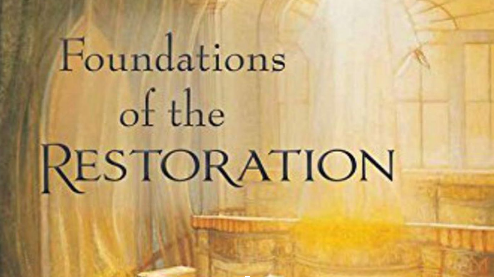

"If Joseph Smith’s transcendent experience in the Sacred Grove teaches us anything,
it is that the heavens are open and that God speaks to His children"
- President Russell M. Nelson
Explore this website to learn more about Joseph Smith's first vision and the restoration
of Christ's church to the earth in the latter days
Recources for learning about the first vision and the restoration
Real people and their testimonies of the resoration

More information about the project